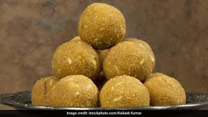

1. First, take fresh gram flour (besan) in a large mixing bowl and add a small amount of water slowly while mixing continuously. Prepare a smooth flowing batter without lumps because proper batter consistency is very important for making soft and delicious boondi. The batter should neither be too thick nor too watery. Let the batter rest for a few minutes so the ingredients blend properly.
2. Heat oil or ghee in a deep frying pan on medium flame. Hold a boondi ladle over the hot oil and pour the prepared batter slowly through the holes. Tiny round boondi droplets will fall directly into the oil. Fry them gently until they become soft, light golden, and perfectly cooked. Do not over-fry because soft boondi gives laddus a rich and melt-in-mouth texture.
3. Prepare sugar syrup separately by boiling sugar and water together in another pan. Stir continuously until the sugar dissolves completely and forms a slightly sticky syrup. Add cardamom powder, saffron strands, and a few drops of rose essence to enhance the aroma and flavor. The warm syrup helps the boondi absorb sweetness evenly.
4. Add the freshly fried boondi into the warm sugar syrup and mix gently so every boondi piece absorbs the syrup properly. Allow the mixture to rest for a few minutes because this helps the boondi become juicy, soft, and flavorful. The sweetness and aroma spread evenly throughout the mixture during this process.
5. Heat a small amount of ghee in another pan and fry cashew nuts, raisins, almonds, and pistachios until golden brown. Add these roasted dry fruits to the boondi mixture to give the laddus extra crunch, richness, and festive flavor. Mix everything carefully without breaking the boondi texture.
6. Once the mixture becomes warm and easy to handle, apply a little ghee to your palms and start shaping the mixture into round laddus. Press gently while shaping so the laddus hold their form properly without breaking. Make all laddus equal in size for an attractive appearance.
7. Garnish the laddus with extra pistachios, saffron strands, or edible silver leaves to make them look rich and festive. The aroma of cardamom, rose essence, and ghee gives the laddus a delicious traditional taste loved by everyone.
8. Finally, serve the special laddus during festivals, weddings, celebrations, and family gatherings. Their soft texture, rich sweetness, crunchy dry fruits, and delicious flavor make laddus one of the most famous and loved traditional Indian sweets enjoyed by people of all ages.
